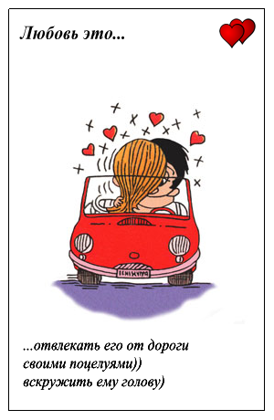
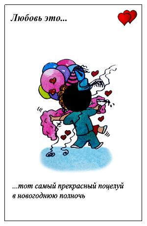
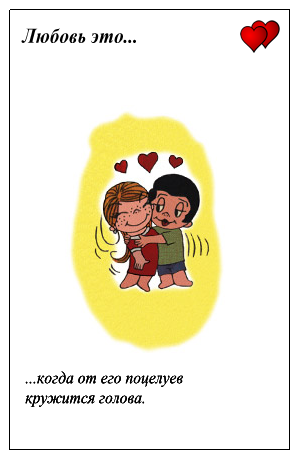

Как научиться целоваться
Для многих людей, особенно девушек, первый поцелуй очень много значит. Ваш первый поцелуй не должен быть совершенным, но воспользовавшись нашими советами, вы сможете сделать его запоминающимся. Для начала вам нужно подготовить все вещи и события правильно в нужное время, чтобы сделать поцелуй как можно более естественным. Хорошей новостью является то, что целовать кого-то особенного в первый раз не сложно. Эмоции – наиболее важный аспект вашего первого поцелуя, чем сам физический процесс этого действия. Но, это не значит, что любой чмок подойдет для первого раза! Поэтому вам, хотябы в теории необходимо знать парочку видов:
1. Чмок — краткий поцелуй с характерным звуком
производимым губами, для запоминающегося первого раза никак
не подходит.
2. Прямой поцелуй — партнеры стоят лицом друг к другу
прямо. В этом случае есть небольшой риск столкнуться носами,
если вы являетесь инициатором данного действия, обязательно
чуть чуть наклоните голову в любую сторону.
3. Засос — это вовсе не вид поцелуя, а след в виде синяка
оставленного в результате засасывания участков кожи
партнера. Чаще всего оставляют засосы на шее, что также явно
не подойдет для первого раза.
4. Французский поцелуй – идеальное средство для завоевания сердца партнера, с совершенно романтическим названием, именно он нам потребуется. Другое название поцелуй с языком. Самое сложное в нем то, что ваш партнер не знает что от него потребуется открыть рот, поэтому данный поцелуй следует проводить не спеша начиная с прямого поцелуя в губы. 
Еще один вид - воздушный поцелуй! Конечно, вы можете
послать его по воздуху уходящему в даль партнеру, а потом
хвастаться в компании какой вы мастер поцелуев. Но это не
исправит ваше положение перед главной задачей.
Выучите интересные комплименты: Искренние комплименты девушке более эффективны! После комплимента никогда не ждите в замен отдачи, это нужно лишь для заполнения лишнего времени и разогрева интереса. Все любят комплименты, любят, чтобы им говорили какие они красивые. Пример комплимента для девушки: «У тебя такая стройная талия, это специально чтобы за неё держаться?» При этом не дожидаясь ответа обнимаешь её за талию.
Итак вы достигли нужного места и сблизились, теперь можете начинать свой поцелуй Прикосновения губ в первом поцелуе средней силы, при продолжении сильнее, но не впивайтесь - это в следующий раз, можете легкими прикосновениями языка ласкать губы партнера. Иногда работают оба языка, иногда — только один. Бывает, что начинает парень, но бывает, что и девушка. Представьте, что рот вашего партнера это ваш рот, делайте в нем тоже что хотите ощутить и сами: плавно водите языком изучая территорию, главное получайте удовольствие и быстро не останавливайтесь. Когда же вам надоест это занятие, просто попробуйте что-нибудь новое. Только смотрите не проглотите своего партнера! Лучшее начало французского поцелуя — разнообразные поцелуи губами, во время которых слегка приоткрывайте свой рот. Это как раз тот момент, когда многие теряются и начинают нервничать. Не паникуйте, если у вас вдруг сильно застучит сердце. В подобных обстоятельствах это естественно! Возможно, что ваш партнер повторит ваше действие и тоже откроет рот. Если нет, попробуйте пососать нижнюю губу, что поможет ему расслабиться. Когда же рот будет открыт, вам останется только начать работать языком.
Основные мысли во время поцелуя: О чем думает девушка или парень во время поцелуя? Нравлюсь ли я ему? Действительно ли он меня любит? Нравится ли ему, как я целуюсь? Не слишком ли далеко засунул свой язык? Нет, пожалуй, все в порядке, как приятно! Да! так хорошо у меня получается! Надеюсь, мы будем целоваться всю ночь.
Когда дело доходит до поцелуев, у многих не срабатывает
воображение, поэтому им кажется, что, если они не будут
работать языком во время поцелуя, партнер сочтет их
неопытными. Поцелую легко научиться, но оттачивать
мастерство можно всю жизнь.
Если вам понравилось целоваться больше практикуйтесь. Давно
доказано что поцелуй способен продлить жизнь, а сильному
полу ученые советуют чаще целовать своих подруг для
выработки лидерских качеств. Во время поцелуя в организме
человека вырабатываются эндорфины и окситоцин содействующие
притоку счастья и свежести. Да, поцелуй принесет вам
здоровье, если это не произойдет как в анекдоте:
«Целуются в подъезде парень с девушкой. Он: Ой, Я кажется
твою жвачку проглотил. А она ему отвечает: нет, это у меня
насморк вторую неделю.»
Кажется про поцелуи понятно, но как французский поцелуй
называют во Франции? Неужели обычным? Ответ - нет. Во
Франции его называют Английским поцелуем. В некоторых
странах известен как "поцелуй души" (и это не в смысле
"удушить"). Считается, что часть души можно передать
партнеру посредством языкового контакта. Также этот поцелуй
известен под названием "борьбы язычков". Здесь главное - не
откусить язык партнеру и не затолкать его так далеко, чтобы
ваш партнер задохнулся.
Все описанное выше легко запомнить, но основное правило:
Читайте сигналы партнера по мере подготовки партнера, в
итоге партнер должен быть готов к поцелую. Даже если вы
твердо верите, в то что вы можете поцеловать партнера,
который полностью решил что находит вас привлекательным или
не совсем уверен в вас, вы можете разглядеть в нем нужные
сигналы.
Какие сигналы нужно искать: Первый, самый простой – она\он
хочет обниматься с вами!
С вами достаточно комфортно, чтобы долго проводить время
наедине.
Отношения должны быть деликатными и нежными.
Что делать остальным частям тела во время поцелуя?
- Глаза: Закройте их в подходящий момент. Посмотрите в
глаза вашему партнеру до тех пор, пока ваши губы не
встретятся, по мере приближения можете перевести взгляд на
его губы. Не закрывайте глаза слишком рано, и не оставляйте
их открытыми во время поцелуя.
- Легкие: Дышите ровно. Хороший и приятный поцелуй длиться, как правило, достаточно долго и в процессе вы будете дышать носом. Не пытайтесь задержать дыхание.
- Руки: Куда их деть? Если вы хотите оставить хорошее
впечатление после первого поцелуя, то вы должны использовать
ваши руки. Начните с объятий партнера, если это девушка , то
ее можно взять за талию, если парень то крепко обнять,
постепенно руки можно опустить чуть ниже – первый поцелуй не
предполагает ласк и возбуждения.
Что делать после поцелуя? Одним словом, после поцелуя ведите себя спокойно, размеренно. Никогда не нервничайте. Всегда помните, что у вас еще есть время, чтобы попробовать новые вещи позже. Оцените положительные моменты и вещи которые вам понравились в поцелуе. Сделайте комплимент партнеру и скажите что вам в нем понравилось. 